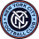
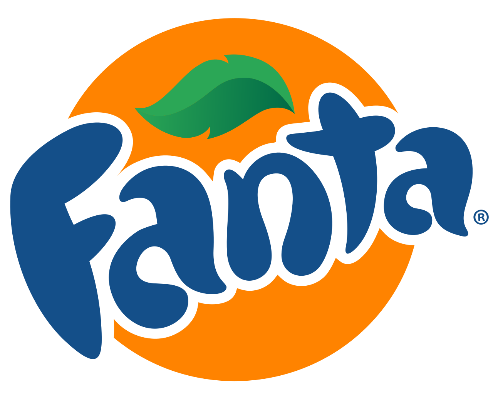
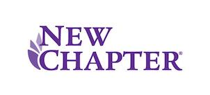

홈 > 브랜드 매거진 > New York City FC
뉴욕 시티 FC New York City FC
뉴욕 시티 FC(NYCFC)는 미국 프로축구 리그 메이저 리그 사커(MLS)에 속한 뉴욕 연고 구단으로, 2013년 창단해 2015시즌부터 리그에 참가했다. 잉글랜드 맨체스터 시티 등을 보유한 다국적 축구 그룹 시티 풋볼 그룹(City Football Group)이 모회사다.
산업 분야 브랜드·비즈니스 · 공개 등급 편집 검수 · 브랜드 평가 4 ★

한눈에 보는 브랜드
뉴욕 시티 FC(NYCFC)는 미국 프로축구 리그 메이저 리그 사커(MLS)에 속한 뉴욕 연고 구단으로, 2013년 창단해 2015시즌부터 리그에 참가했다. 잉글랜드 맨체스터 시티 등을 보유한 다국적 축구 그룹 시티 풋볼 그룹(City Football Group)이 모회사다.
브랜드 관점
뉴욕 시티 FC의 엠블럼은 2014년 팬 10만여 표의 공개 투표로 선정된 원형 크레스트로, 1953년 도입돼 약 50년간 쓰인 뉴욕 지하철 토큰의 형태와 구성에서 영감을 얻었다. 라파엘 에스케르가 디자인한 중앙의 NYC 모노그램을 중심으로 외곽에 'NEW YORK CITY FOOTBALL CLUB' 레터링을 둘렀고, 도시 표지판 서체 고담을 차용했다.
컬러는 모기업 맨체스터 시티의 스카이블루와 네이비를 계승하고, 뉴욕시 시기에서 따온 오렌지를 더했다. 다섯 개의 펜타곤은 뉴욕의 다섯 자치구를 상징하며, 원형은 다양한 팬층의 통합과 포용을 표현한다.
지하철 토큰·도시 시기·구 정체성을 디자인 언어로 압축한 사례다.
시작과 성장
뉴욕 시티 FC는 2013년 5월 21일 맨체스터 시티를 산하에 둔 시티풋볼그룹과 뉴욕 양키스 구단이 공동으로 창단을 발표하며 출범했다. 시티풋볼그룹과 양키스는 1억 달러(약 1천억 원)의 가입비를 내고 미국 메이저리그사커(MLS)의 스무 번째 확장 구단으로 합류했다.
소유 구조는 아부다비 기반 시티풋볼그룹이 다수 지분을 보유하고, 양키스 모회사인 양키 글로벌 엔터프라이즈와 투자자 마르셀로 클라우레가 소수 지분을 갖는 형태다. 뉴욕시를 연고로 한 첫 MLS 구단이자 뉴욕 광역권에서는 레드불스에 이은 두 번째 클럽이다.
2014년 6월 스페인 월드컵 우승 출신 공격수 다비드 비야가 첫 선수로 영입됐고, 2015년 MLS 시즌에 첫 리그 경기를 치르며 정식으로 출범했다.
브랜드 아이덴티티
뉴욕 기반 스튜디오 Gretel이 진행한 작업은 기존 지하철 토큰 모티프 크레스트를 계승하면서 작은 크기에서의 가독성을 높이고 비례를 다듬은 갱신을 핵심으로 한다. 중앙의 NYC 모노그램은 더 굵고 균형 잡힌 형태로 정제되었고, 배지 양옆의 오각형(펜타곤)은 뉴욕의 5개 자치구를 상징하며 'Five Borough Bond'가 콘셉트 축으로 제시되었다.
Frere-Jones Type이 통합 이전 뉴욕 지하철 사인 레터링에서 영감을 받아 Local·Express 두 전용 서체를 제작했고, 도시 지형에서 도출한 모자이크 그래픽 시스템이 더해졌으며 색상은 기존 스카이 블루와 네이비의 대비를 강화했다.
제품과 서비스
구단은 2015년 첫 시즌부터 브롱크스의 양키 스타디움을 주 홈구장으로 사용해 왔다. 유니폼 제조사는 2014년부터 아디다스, 메인 스폰서는 2015년부터 에티하드 항공이 맡고 있다.
2025시즌 1군 유니폼 '엑셀시오르 킷'은 창단 10주년을 기념해 스카이블루·네이비·오렌지·화이트 네 가지 팀 컬러를 처음으로 한데 모았고, 뉴욕의 마천루에서 디자인 영감을 얻었다.
사람들
현재 상태
2021년 12월 11일 포틀랜드 팀버스와의 MLS컵 결승에서 1-1 무승부 뒤 승부차기 4-2로 이겨 창단 첫 MLS컵 우승을 차지했다. 골키퍼 션 존슨이 결승 MVP였다.
윌렛츠포인트(퀸스)에 짓는 2만 5천 석 전용 구장 에티하드 파크는 2024년 12월 착공해 2027년 여름 개장을 목표로 하고 있다.
타임라인
BI/CI 변천사
자주 묻는 질문
뉴욕 시티 FC의 브랜드 아이덴티티는 무엇인가요?
뉴욕 기반 스튜디오 Gretel이 진행한 작업은 기존 지하철 토큰 모티프 크레스트를 계승하면서 작은 크기에서의 가독성을 높이고 비례를 다듬은 갱신을 핵심으로 한다.
뉴욕 시티 FC의 대표 제품은 무엇인가요?
구단은 2015년 첫 시즌부터 브롱크스의 양키 스타디움을 주 홈구장으로 사용해 왔다.
뉴욕 시티 FC는 현재 어떤 상태인가요?
2021년 12월 11일 포틀랜드 팀버스와의 MLS컵 결승에서 1-1 무승부 뒤 승부차기 4-2로 이겨 창단 첫 MLS컵 우승을 차지했다.
함께 읽을 브랜드
YO
YO!
브랜드·비즈니스 · 편집 검수YO!YO!는 영국에 회전초밥을 대중화한 레스토랑 체인이다. 엔터테인먼트 업계 출신의 사이먼 우드로프가 1997년 런던 소호의 폴란드 스트리트에 첫 매장을 열며 출발했다....

브랜드·비즈니스 · 편집 검수Fanta환타는 코카콜라 컴퍼니가 보유한 과일향 탄산음료 브랜드로, 오렌지를 비롯한 다양한 과일 풍미를 밝고 경쾌한 색감으로 표현하는 것이 특징이다. 1940년 제2차 세계대...
Al
Almighty
브랜드·비즈니스 · 편집 검수Almighty올마이티는 2015년 벤 레나트가 뉴질랜드에서 시작한 유기농 음료 회사다. 웰링턴의 커피숍과 주스 가게에서 출발해 병에 담은 과일·채소 블렌드 주스로 자리를 잡았고,...
 브랜드·비즈니스 · 편집 검수Chime
브랜드·비즈니스 · 편집 검수ChimeChime는 2024년에 기록된 Designed by jkr 계열의 브랜드 아이덴티티 사례입니다. jkr, Marco Palmieri가 아이덴티티 작업의 디자이너로...
Ha
Hart Bageri
브랜드·비즈니스 · 편집 검수Hart BageriHart Bageri는 2025년에 기록된 Designed by Gretel 계열의 브랜드 아이덴티티 사례입니다. Gretel가 아이덴티티 작업의 디자이너로 기록되어...
 브랜드·비즈니스 · 편집 검수Jaffa
브랜드·비즈니스 · 편집 검수JaffaJaffa는 2024년에 기록된 Big Brands 계열의 브랜드 아이덴티티 사례입니다. Earthling Studio가 아이덴티티 작업의 디자이너로 기록되어 있습니...
Me
Mercado Famous
브랜드·비즈니스 · 편집 검수Mercado FamousMercado Famous는 2024년에 기록된 Designed by Gander 계열의 브랜드 아이덴티티 사례입니다. Gander가 아이덴티티 작업의 디자이너로 기...

브랜드·비즈니스 · 편집 검수New ChapterNew Chapter는 2018년에 기록된 Designed by Paul Belford Ltd 계열의 브랜드 아이덴티티 사례입니다. Paul Belford Ltd가...